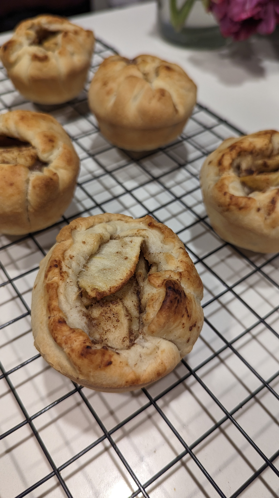

mini apple filling
Ingredients
- 2 apples (chopped)
- 2 TBsp flour
- 1/4 cup sugar
- 1 tsp cinnamon
- 1 tsp vanilla
process
- mix all ingredients
- split pie crust into 6 (enough to fill muffin pan)
- add filling and fold edges in, to cover top
- bake @ 425F/218C for 20 mins
- cool in pan for 10 min
- remove from pan, then cool on rack

curated by BUSHSK8R